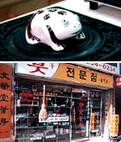
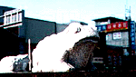
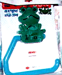

|
クララ姫が新春カエル爆発インタビュー！【仙台発=ジョゼフィーヌ・クララ同志記者】ここをみてください。ここに、クララがインタビューされているんですが、カエラー魂爆発ということで、カエルをひきつれての取材に応じてきました（笑）カエルのなべつかみと、友達がアメリカから買ってきてくれたお土産カエル（お腹をおすと、舌がびよよ〜んとのびます！！！）と写真もパチリッカエル街道マッシグラでーす！
【全国かえる奉賛会】東北地方で注目を集める人物を紹介する企画の中で、クララさまが紹介されているーっ！カエラーのみんなも、クララ様を手本にインタビューされたり取材されたり、研究成果を発表するときなどは、カエルとともに写真に写ろうではありませんか！またいつフォーカスされてもよいように、常日頃からカエルとともに行動していることが肝要です。
 韓国全土がカエル化！【大韓民国発=ニャタロウ様】韓国に行ってきましたら、あちこちにカエルがあふれていまして、カエルパワーをとっても感じました。中でも、大邱市は、カエル記念品で全市が満ちていまして、まずは、古めかしい書道を売る店にはいったときのことです。水差しがカエルデザインでした。
 次に道を歩くと、素晴らしい石像が鎮座していまして、これはヘビ年であるにもかかわらず、全市にカエルがにらみをきかせていたのです。そうして、旅行中に入ったコンビニには、たったの２２００ウオン（約２００円）で、カエルのタオルかけもあるではありませんか。 他にも取ったのですがカメラを落としてしまいフィルムが駄目になりました残念 また行きますのでそのときをお楽しみに・・・
 負けるな日本！公的資金投入で全国カエル化計画推進！【全国かえる奉賛会】平成１５年の日韓ワールドカップをにらんで、隣国は着々とカエル化の準備を進めているということなのであろうか。国を挙げて熱く燃えるのが唐辛子パワーの素晴らしい隣国の国民性なのである。わが国も負けてはおれんぞー。いますぐワールドカップの公式キャラクターをカエルキャラにするよう決定し、開会式会場には、高さ８０メートル。東京ドーム３つぶんの偉容を誇る大理石の巨大カエルを建立して、国民のカエル化に公的資金を投入しようではないかあああああ。
参院選カエル系議員は公認申請を！【全国かえる奉賛会】次回の参院選には、『国家カエル化推進法案』を支持するカエル系議員の多数当選を願うものであるー。選挙ポスターや応援キャラにカエルを選択した候補者は、早めに名乗り出てクレーっ！全国カエル奉賛会公認候補として支持するぞーっ！カエルはどこに？パナマに忍者カエル！【東京発=やましょう様】熱帯パナマで撮った擬態のカエルの写真をＨＰで公開しています。このカエルは忍者みたいに擬態してしまい、写真に撮影したもののよーくみないと、どこにいるかがわかりません。私自身が、写真を現像して５時間後に発見したくらいです。実は、みなさんにお願いがあります。このカエルの名前（学名）が分かりません。探していただけると嬉しいのですが。場所は、パナマの熱帯降雨林太平洋側です。お願いします。
【全国かえる奉賛会】大王は、いまだにカエルを発見できないぞーっつ。いったいどこに隠れているんだああああ。ヒントもみたけど、いまだにわかんないぞー。ええーっ。ほんとにどこにいるんだああああ。分かった人は大王にもおしえてくれー。
投稿採用者に武功カエル徽章を授与！ |
かえる古新聞過去に取り上げた記事を見出し付きで一覧したい人は、ここをクリック◆創刊号を見る◆先週号を見る◆話題の号を見る◆かえる新聞の昔を読む◆COOL NET FROG RANKING !
|
私も入っています。。全国かえる奉賛会
大王様に会うには、このバナーをクリック。ずっと奥に写真館があるぞ。全国かえる奉賛会に入会するには、自分のホームページのどこかに、下の部分を追加するとバナーがリンク付きで表示されるぞ。どんどん入会しましょー |


|